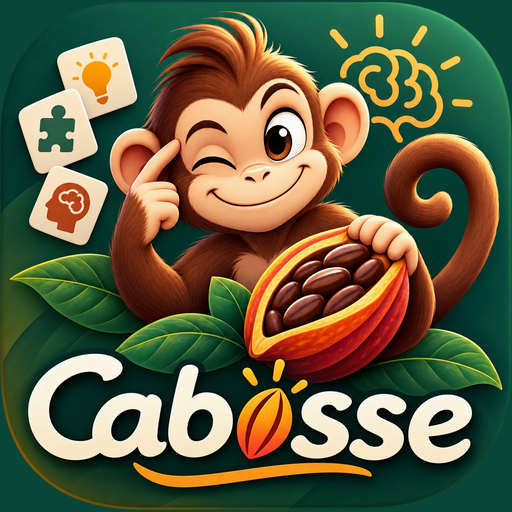

Réactivation mémorielle

Montre tes tâches faites à un parent : il saisit le code pour te débloquer les points.
Mot de passe requis pour y accéder.
Affiché à côté de tes messages.
Vise le QR code affiché sur l\u2019autre téléphone.